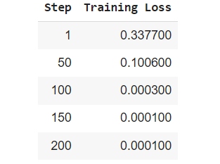

Code
from datasets import load_dataset, concatenate_datasets
# Load the IMDb dataset
imdb_dataset = load_dataset("imdb")This project uses the SetFit (Sentence Transformer Fine-Tuning) framework to perform few-shot text classification. Few-shot learning allows a model to learn well with very little labeled data, which is especially useful when collecting large datasets is difficult. In this project, we use the IMDb movie reviews dataset to classify reviews as positive or negative, aiming to train an effective model using only a small number of labeled examples for each class.
SetFit combines the strengths of pre-trained sentence transformers with contrastive learning to fine-tune sentence embeddings for specific tasks. This makes it possible to learn efficiently from just a few examples. The framework fine-tunes the embeddings by using pairs of similar and different sentences, then trains a simple classifier on top of the embeddings for the classification task.
We go through the following primary steps:
Sampling a small number of examples per class (few-shot setting) from the original dataset and generating positive and negative pairs for contrastive learning.
Fine-tuning a pre-trained sentence transformer model to adapt the embeddings for sentiment classification using the sampled data.
Training a classifier on the fine-tuned embeddings to predict whether a movie review is positive or negative.
Evaluating the model’s performance on the test data to measure its effectiveness in few-shot classification.
The IMDb dataset consists of movie reviews labeled as either positive or negative. The original dataset has balanced train and test datasets, each containing 25,000 labeled samples (reviews) and an additional 50,000 unlabeled samples for unsupervised learning.
let’s load and explore the original IMDb dataset.
DatasetDict({
train: Dataset({
features: ['text', 'label'],
num_rows: 25000
})
test: Dataset({
features: ['text', 'label'],
num_rows: 25000
})
unsupervised: Dataset({
features: ['text', 'label'],
num_rows: 50000
})
}){'text': Value(dtype='string', id=None), 'label': ClassLabel(names=['neg', 'pos'], id=None)}I rented I AM CURIOUS-YELLOW from my video store because of all the controversy that surrounded it when it was first released in 1967. I also heard that at first it was seized by U.S. customs if it ever tried to enter this country, therefore being a fan of films considered "controversial" I really had to see this for myself.<br /><br />The plot is centered around a young Swedish drama student named Lena who wants to learn everything she can about life. In particular she wants to focus her attentions to making some sort of documentary on what the average Swede thought about certain political issues such as the Vietnam War and race issues in the United States. In between asking politicians and ordinary denizens of Stockholm about their opinions on politics, she has sex with her drama teacher, classmates, and married men.<br /><br />What kills me about I AM CURIOUS-YELLOW is that 40 years ago, this was considered pornographic. Really, the sex and nudity scenes are few and far between, even then it's not shot like some cheaply made porno. While my countrymen mind find it shocking, in reality sex and nudity are a major staple in Swedish cinema. Even Ingmar Bergman, arguably their answer to good old boy John Ford, had sex scenes in his films.<br /><br />I do commend the filmmakers for the fact that any sex shown in the film is shown for artistic purposes rather than just to shock people and make money to be shown in pornographic theaters in America. I AM CURIOUS-YELLOW is a good film for anyone wanting to study the meat and potatoes (no pun intended) of Swedish cinema. But really, this film doesn't have much of a plot.0However, to simulate the few-shot setting, we will sample only 32 examples (16 positive, 16 negative) from the original dataset to demonstrate how the SetFit framework can effectively perform few-shot learning using contrastive learning.
We also create a balanced test dataset with 2,000 examples from the original dataset to reduce the computational resources needed for evaluating the model.
# Define a function to balance the dataset
def balance_dataset(dataset, label_col, num_samples):
# Filter positive and negative examples
positive_samples = dataset.filter(lambda example: example[label_col] == 1)
negative_samples = dataset.filter(lambda example: example[label_col] == 0)
# Subsample both to the desired number
positive_samples = positive_samples.shuffle(seed=42).select(range(num_samples // 2))
negative_samples = negative_samples.shuffle(seed=42).select(range(num_samples // 2))
# Concatenate positive and negative examples to form a balanced dataset
balanced_dataset = concatenate_datasets([positive_samples, negative_samples]).shuffle(seed=42)
return balanced_datasettrain_data:
Dataset({
features: ['text', 'label'],
num_rows: 32
})
test_data:
Dataset({
features: ['text', 'label'],
num_rows: 2000
})We use a pre-trained sentence transformer model (all-mpnet-base-v2) and fine-tune it using contrastive learning on a small balanced dataset we created. Contrastive learning helps the model better understand semantic similarities and differences between the reviews.
After fine-tuning the embeddings, a lightweight classifier is trained to predict whether a given review is positive or negative.
when we load the sentence transformer model, by default, a logistic regression model is also chosen as classifier to train.
LogisticRegression()The SetFitTrainingArguments class is used to specify how the model should be trained. It’s similar to training configurations in other frameworks like transformers.
num_epochs=3: This specifies that the training process will run for 3 epochs. One epoch means that the entire training dataset will pass through the model once.
num_iterations=20: This refers to the number of contrastive learning steps or the number of text pairs the model should learn from.
Contrastive Learning is a self-supervised learning technique where the model learns to differentiate between similar and dissimilar pairs of inputs. It’s widely used to improve the quality of sentence embeddings.
The SetFitTrainer is the main class responsible for orchestrating the training process. It takes care of the training loop, optimization, and evaluation.
***** Running training *****
Num unique pairs = 1280
Batch size = 16
Num epochs = 3
trainer.train() triggers the training loop where the model will learn from the sampled training data (16 examples per class) for 3 epochs, applying contrastive learning over 20 iterations per batch.
Notice that output mentions that 1,280 sentence pairs were generated from the 32 samples (16 positive and 16 negative)we provided for fine-tuning the SentenceTransformer model.
***** Running evaluation *****
{'f1': 0.8772504091653028}After training, the model is evaluated on the test data (test_data) using the F1 score. The goal is to assess how well the model performs in classifying movie reviews as positive or negative based on the few-shot training it received.
This highlights the power of few-shot learning with SetFit. With only a limited amount of labeled data (32 labeled samples), we achieved an impressive F1 score of 0.87